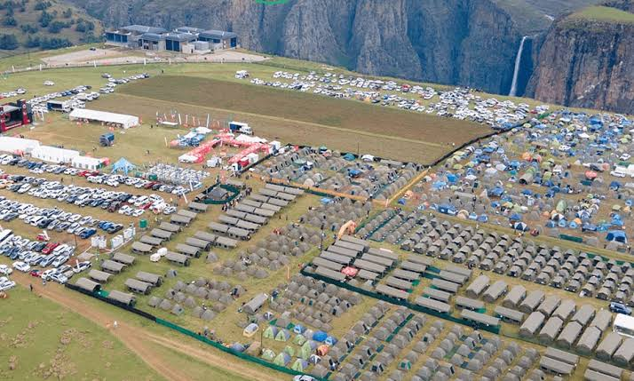
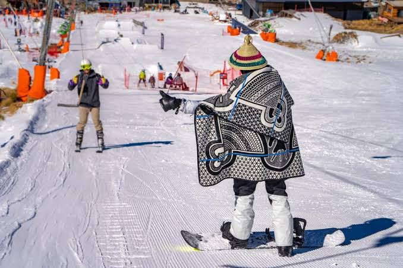

Discover all sorts of activities in Lesotho


| ACTIVITY | WHERE | DURATION | PRICE (LSL) | INCLUDES |
|---|---|---|---|---|
| Skiing and Snowboarding | Afriski Mountain Resort,Butha-Bothe | 2-2.5Hrs | M620 | Slope Access & Terrain: Access to a central groomed main ski slope and the Kapoko Snow Park, which is designed for snowboarders, freestylers, and trick practice |
| Hiking and Trail Running | Thabana Ntlenyane | 1hr | M300 | Unmarked or Cairned Trails: Unlike heavily manicured parks, much of the terrain features unmaintained or lightly cairned paths where self-navigation, GPS maps, or a local guide are essentia |
| Abseiling Maletsunyane Falls | Semonkong Lesotho | 2hrs | M100 | Mandatory Training Session: A 25-meter practice and safety briefing held the day before the main descent at a training cliff near Semonkong Lodge (covering harness use, descent speed control, and safety procedures) |
| Pony Trekking | Malealea,Mafeteng | 1hr | M200 | Scenic Highlights & Cultural Stops: Access to landmarks such as the Pitseng Gorge, Botsoela Waterfall, Echo Cave, and local Bushman rock art paintings (with short walking segments where horses cannot go) |
| Maletsunyane Braai Festival | Semonkong Lesotho | 2days | M1030 | Access to festival grounds, live music, entertainment, food stalls |